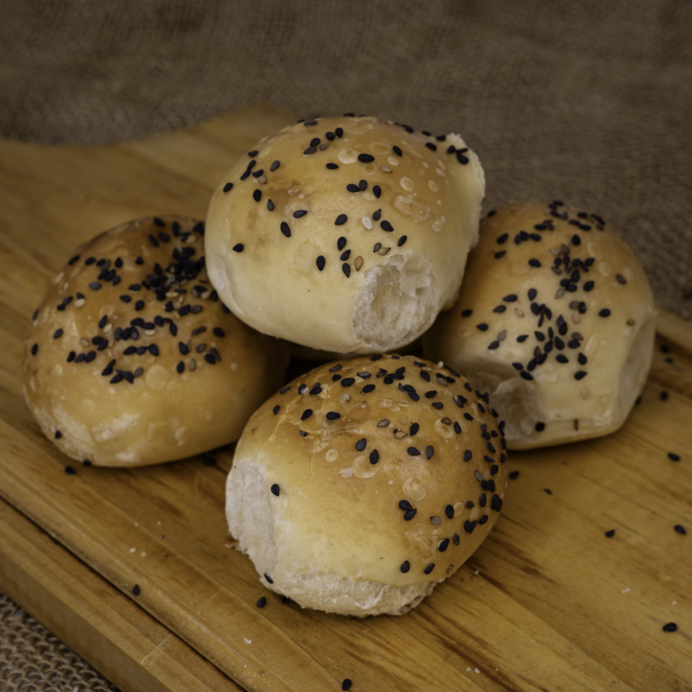

Receta pan saborizado de Cebolla

La mejor receta de este pan saborizado para disfrutar y muy facil de hacer
Ingredientes
- 600 gr. harina de pureza(0000)
- 30 gr. levadura
- 1 sobre sopa crema de cebolla
- 4 cucharadas cebollas desacada
- 10 gr. sal
- 1 cucharadita de azúcar
- 70 cc. aceite
- 370 cc. leche tibia
Lista de pasos
- Poner todos los secos en el bols de la batidora junto con el aceite.
- Luego leche tibia de a poco hasta tener bollo liso y homogéneo.
- Bajamos a mesada, amasamos un poco, dividimos en bollos, bollamos y acomodamos en una fuente aceitada.
- Pintamos con huevo, hacemos unos cortes en cruz y dejamos duplicar. Horno precalentado y poner a 180° durante 15 min. Sale con una miga increíble.
Leer la receta desde la pagina cookpad
Leer la receta de Pan de Miel
volver al inicio